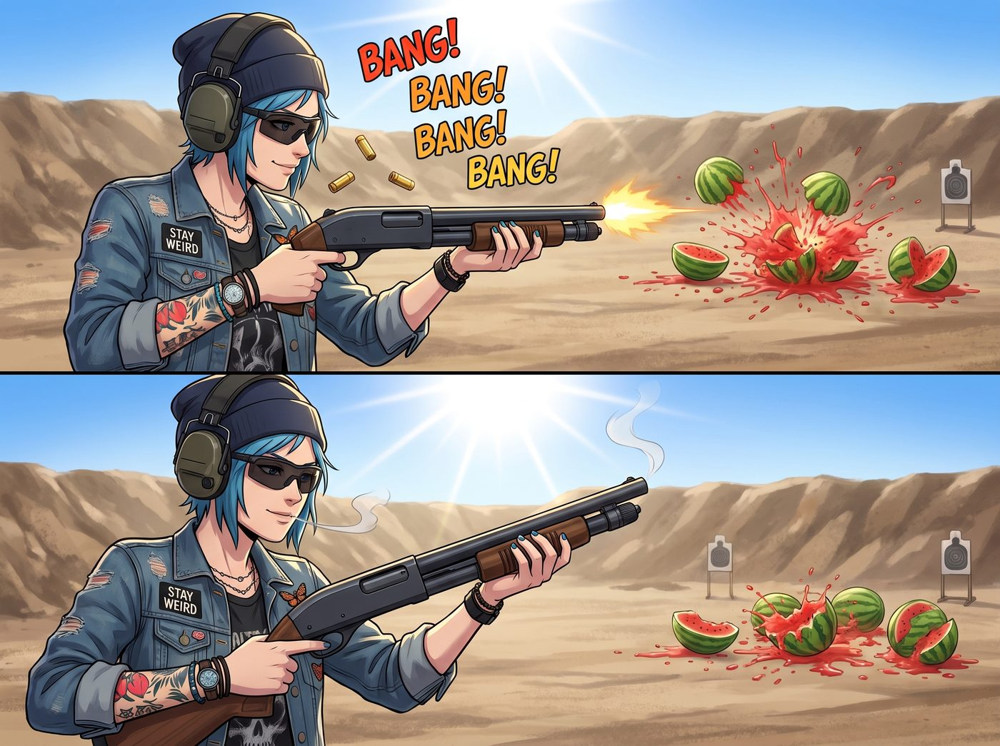

中軸鎖定的降維打擊

得益於奧林匹亞半島那廣袤無垠且人跡罕至的荒野，二號車廂在合法性上擁有著得天獨厚的優勢。當然，最關鍵的是，實習生 Lily 僅用了一個晚上的時間，就透過華盛頓州自然資源部的某個冷門條款，將車廂後方一塊長達五百碼的空地，合法註冊為能源部核設施附屬高動能物理防護測試區。
在這個名頭的加持下，Chloe 終於擁有了一個完全合法、且不必擔心被鄰居投訴噪音的私人靶場。為了讓大家能在射擊間隙正常聊天而不用扯著嗓子喊話，Chloe 特地把現場所有槍械——不管是那把短管步槍還是那把標準手槍——都事先換裝了 .22 口徑的轉換槍管，搭配亞音速彈藥使用。口徑一降，後座力和聲響都跟著小了一大截，既不會嚇到附近的野生動物，也讓這場臨時教學安全許多。
一、街頭霸王的教學課
在一個陽光刺眼的下午，Chloe 戴著戰術墨鏡和抗噪耳機，穿著那件標誌性的破洞皮夾克，手裡端著那把短管步槍，站在靶場的射擊線上。
「砰！砰！砰！砰！」
伴隨著震耳欲聾的槍聲和飛濺的彈殼，五十碼外的幾顆西瓜應聲爆裂，紅色的汁液在陽光下炸開。Chloe 行雲流水地完成了一次戰術換彈，然後單手持槍，帥氣地吹了一口槍管上根本不存在的硝煙。
「看到了嗎，菜鳥們？這就叫街頭霸王的火力壓制！」Chloe 轉過頭，對著坐在後面遮陽傘下喝著冰檸檬水的眾人得意地挑了挑眉，「在這個危機四伏的廢土世界，光靠法規是擋不住變異熊或者武裝暴徒的。今天，老娘就大發慈悲，教教你們這些文青和書呆子怎麼使用碳基生物最偉大的發明——槍械。」
「說得好像妳一直都是槍法大師似的。」Max 慢悠悠地端起冰檸檬水，嘴角勾起一抹意味深長的笑，「妳還記得當年在廢品場那次嗎？妳耍帥要展示什麼『左輪快拔』，結果一個沒拿穩，子彈直接打進了自己的腿。要不是我及時倒轉時間，妳現在走路大概要靠假肢了，還敢在這裡教別人握槍。」
Chloe 的臉瞬間漲紅：「那……那是很久以前的事了！而且那把槍的扳機故障，跟老娘的技術沒關係！」
「是是是，扳機的錯，跟妳無關。」Max 輕笑著喝了一口飲料，「多虧了我這台死神接班人的超能力，讓死神那天差點失業。」
「閉嘴，Maxine！」Chloe 惱羞成怒地瞪了她一眼，隨即清了清嗓子，硬是把話題拉回正軌，「總之，今天不一樣！老娘現在是有A級執照的專業人士！」
Chloe 走到遮陽傘下，拿起一把標準的手槍，退出彈匣檢查了一下，然後遞向了正抱著平板電腦核對帳單的 Lily。
「來吧，實習生。妳的聯邦法規在三十碼外是沒有殺傷力的。」Chloe 壞笑著，擺出了一副嚴厲教官的姿態，「我先教妳最基礎的等腰三角形握槍法。雙腳與肩同寬，身體微微前傾，千萬別害怕後座力。記住，槍是妳的朋友，妳要感受它的呼吸……」
二、意外的專業
Lily 放下平板電腦，乖巧地站了起來。她今天穿著一件印著草莓圖案的背帶褲，推了推反光的圓框眼鏡，雙手接過那把散發著機油味的黑色手槍。
「Price 學姐，請問這把手槍配備的彈藥，彈頭重量是多少格令？」Lily 溫柔地發問。
Chloe 愣了一下：「呃……妳問這個幹嘛？妳只需要瞄準那個紙靶，然後扣扳機！」
「了解。」Lily 點了點頭，大眼睛裡突然閃過一絲令人毛骨悚然的、彷彿在計算跨國做空模型般的極致理性光芒。
她沒有採用 Chloe 教的什麼等腰三角形，而是雙腳精準地分開到一個極度符合人體工學的夾角。接著，她將手槍舉起，但姿勢卻無比怪異且專業——手槍緊貼著胸口前方，槍身微微傾斜，形成了一個極度緊湊且極具防禦性的射擊姿態。
「等等，Lily，妳那是中軸鎖定射擊法？！」Chloe 瞪大了眼睛，那可是電影裡頂級特種部隊在狹窄空間裡才會用的高級戰術動作！
Lily 沒有回答。她像一個莫得感情的精密機器人，平靜地扣動了扳機。
「砰！砰！砰！砰！砰！」
五發子彈在不到兩秒的時間內傾瀉而出，節奏均勻得像是某種節拍器。沒有新手的驚慌，沒有後座力導致的槍口上揚，Lily 的手臂穩得就像是液壓機械臂。
三、同一個彈孔
槍聲停止，靶場陷入了死一般的寂靜。
Chloe 抓起桌上的高倍數觀測鏡，難以置信地看向三十碼外的人形紙靶。紙靶的頭部沒有五個彈孔。準確地說，那裡只有一個稍微大一點的破洞——五發子彈，在三十碼的距離上，全部精準地穿過了同一個彈孔，完美地命中了紙靶眉心的絕對中心點。
「這……這不可能……」Chloe 的下巴差點掉在地上，她轉過頭，像看怪物一樣看著正在優雅地按下彈匣釋放鈕的實習生，「妳……妳到底是從哪個刺客聯盟畢業的？！」
「Price 學姐，請不要將這項運動過度神秘化。」Lily 溫柔地將手槍放在桌上，拿出隨身攜帶的酒精消毒濕巾，輕輕擦拭著沾上了一點火藥殘渣的手指。
「射擊，本質上只是一道非常基礎的物理與幾何綜合運算題。」Lily 的聲音軟糯甜美，彷彿在講解小學數學，「當您將風偏、空氣阻力係數、彈頭初速與重力下墜的拋物線方程代入大腦後，只需要計算出扳機的機械阻力與擊發瞬間的微小震動補償。接著，讓身體的肌肉群執行這段函數就可以了。」
Chloe 呆若木雞：「肌肉……函數？」
「是的。」Lily 乖巧地笑了笑，「上週我在幫您處理那份防爆哨塔的環境評估報告時，順便深度學習了頂級教官手冊與終端彈道學教材。我發現，只要排除了人類多餘的恐懼與腎上腺素等情緒干擾因素，將身體當作一個剛性火砲底座，就能實現百分之百的命中率。」
四、無地自容的教官
站在一旁的 Victoria 忍不住翻了個優雅的白眼。
「Price，我早就警告過妳，不要試圖在任何有規則可循的領域去挑戰這個怪物。」名媛喝了一口冰水，「她連華爾街的量化交易模型都能手算出來，妳覺得妳那點三腳貓的街頭開槍手感，能比得過她大腦裡的彈道計算機嗎？」
Chloe 徹底吃癟了。她原本想在文青和書呆子面前秀一波廢土求生的硬核技能，結果卻被一個穿著草莓背帶褲的十九歲女孩，用高維度的物理學和聯邦特工教材按在地上瘋狂摩擦。
「我恨妳的大腦，Lily。我真的恨。」Chloe 挫敗地倒在躺椅上，把戰術墨鏡拉下來遮住自己的臉，試圖掩蓋自己的尷尬。
這時，Kate 端著一盤剛切好的冰鎮西瓜走了過來。小天使看著遠處那個眉心被打穿的紙靶，發出了一聲溫柔的驚嘆。
「哇，Lily，妳打得真準呢。」Kate 遞給 Lily 一塊西瓜，眼神裡充滿了聖潔的讚美，「妳看，五顆子彈都從同一個門裡穿了過去，這說明它們在飛行的過程中沒有互相擁擠，非常守秩序呢。這一定是因為 Lily 在開槍的時候，心裡充滿了平靜與愛吧？」
聽著大天使將恐怖的彈道計算與冷酷的開火解讀為子彈排隊守秩序的愛心行為，Max 默默地舉起拍立得，將 Chloe 生無可戀的表情和 Lily 乖巧吃西瓜的畫面定格了下來。
「所以，Chloe，接下來的課程是什麼？」Max 晃著手裡的底片，忍不住補了一刀，「教我們如何用愛心和函數去保養妳那把短管步槍嗎？」
「閉嘴，Maxine！」Chloe 抓狂地喊道，「今天的課程到此結束！我要回車廂去打電動！這見鬼的靶場我一天都不想待了！」